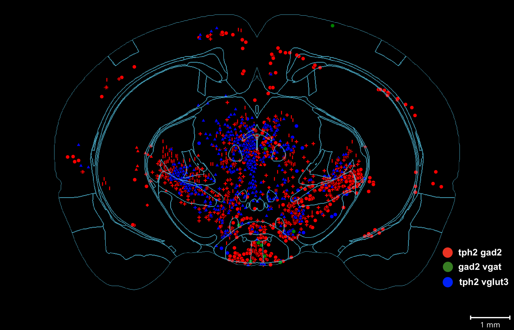

### Extracting Mesoscale Neuron Anatomy from Whole-Brain Images Thomas L. Athey Research Defense June 12, 2023 <br> <img src="../../images/funding/jhu_bme_blue.jpg" STYLE="width:100%;" /> <!-- <img src="../images/funding/KNDI.png" STYLE="HEIGHT:95px;"/> --> --- ### Mesoscale Neuon Anatomy <div class="row"> <div class="column2"> <img src="images/meso.png" STYLE="width:90%;" /> </div> <div class="column2"> </div> </div> <footer, style="font-size: 12px"> Mitra, 2014; Oh et al., 2014 </footer> --- ### The Problem - A cell-level atlas of the mammalian brain could revolutionize how we understand brain function and brain disorders. - Two key computational steps associated with cataloging mesoscale morphology are: - Neuron segmentation and tracing - Mapping neurons to common coordinate systems <div class="row"> <div class="column2"> </div> <div class="column2"> </div> </div> --- ### What we've done - Fit splines to neuron traces and study curvature/torsion across axonal arbors.<sup>1</sup> - Develop HMM based reconstruction method and validated on partial axons from MouseLight data.<sup>2</sup> - Investigated the distortion introduced in transforming discretized neuron traces.<sup>3</sup> - Developed an open pipeline for density based connectivity analysis.<sup>4</sup> - Applied the tools to whole-brain fluorescence images to help answer biological questions. <footer, style="font-size: 12px"> (1) Athey et. al. (2021) Fitting Splines to Axonal Arbors Quantifies Relationship Between Branch Order and Geometry. <i> Front. Neuroinform. </i> <br> (2) Athey et al. (2022) Hidden Markov modeling for maximum probability neuron reconstruction. <i>Commun Biol</i>. <br> (3) Athey et al. (2023) Preserving Derivative Information while Transforming Neuronal Curves. <i>In Review</i>. <br> (4) Athey et al. (2023) BrainLine: An Open Pipeline for Connectivity Analysis of Heterogeneous Whole-Brain Fluorescence Volumes. <i>In Prep</i>. </footer> --- ## .center[1) Comparing Curvature and Torsion across Axonal Arbors] <br><br><br><br><br><br><br><br><br><br><br><br><br><br> <footer, style="font-size: 12px"> Athey et al. (2022) Hidden Markov modeling for maximum probability neuron reconstruction. <i>Commun Biol</i>. </footer> --- ### 1) Compare Curvature and Torsion across Axonal Arbors --- ### 1) Compare Curvature and Torsion across Axonal Arbors <img src="images/spline-diffs.jpeg" STYLE="width:80%;" class="center"/> <footer, style="font-size: 12px"> Athey et. al. (2021) Fitting Splines to Axonal Arbors Quantifies Relationship Between Branch Order and Geometry. <i> Front. Neuroinform. </i> </footer> --- ## .center[2) Hidden Markov Model-based Neuron Tracing] <br><br><br><br><br><br><br><br><br><br><br><br><br> <footer, style="font-size: 12px"> Athey et al. (2022) Hidden Markov modeling for maximum probability neuron reconstruction. <i>Commun Biol</i>. </footer> --- ### 2) ViterBrain: HMM-based Neuron Tracing <img src="images/fig2_algorithm.jpg" STYLE="width:100%;" /> --- ### 2) ViterBrain: HMM-based Neuron Tracing --- ### 2) Apply ViterBrain to Whole-Brain Images <footer, style="font-size: 12px"> Ongoing collaboration with Sriram Sudarsanam of Kolodkin Lab. </footer> --- ### 2) Apply ViterBrain to Whole-Brain Images <footer, style="font-size: 12px"> Ongoing collaboration with Sriram Sudarsanam of Kolodkin Lab. </footer> --- ## .center[3) Mapping Discretized Neuronal Curves with Diffeomorphisms] <br><br><br><br><br><br><br><br><br><br><br> <footer, style="font-size: 12px"> Athey et al. (2023) Preserving Derivative Information while Transforming Neuronal Curves. <i>In Review</i>. </footer> --- ### 3) Mapping Discretized Neuronal Curves with Diffeomorphisms <div class="row"> <div class="column2"> Existing Method: <br> $c:\mathbb{R}\rightarrow \mathbb{R}^3$ sampled at $\lbrace t_i \rbrace_i$ $$\phi \cdot \lbrace (t_i, c(t_i)) \rbrace_i=$$ $$\lbrace (t_i, \phi \circ c(t_i)) \rbrace_i$$ </div> <div class="column2"> <img src="images/comp2.jpg" STYLE="width:100%;"/> </div> </div> Generalized Method: $$\phi \cdot \lbrace (t_i, c(t_i), c'(t_i),...,c^{(k)}(t_i)) \rbrace_i=\lbrace (t_i, \phi \circ c(t_i), \frac{d}{dt}\phi \circ c(t_i),$$ $$...,\frac{d^k}{dt^k}\phi \circ c(t_i)) \rbrace_i$$ --- ### 3) Mapping Discretized Neuronal Curves with Diffeomorphisms <img src="images/map-toy.jpg" STYLE="width:70%;" class="center"/> <footer, style="font-size: 12px"> Athey et al. (2023) Preserving Derivative Information while Transforming Neuronal Curves. <i>In Review</i>. </footer> --- ### 3) Mapping Discretized Neuronal Curves with Diffeomorphisms <img src="images/zero-prop.png" STYLE="width:100%;" class="center"/> --- ### 3) Mapping Discretized Neuronal Curves with Diffeomorphisms Also, for $f=\phi \circ c$ and $g_0,g_1$ zeroth and first order mappings $$Error(g_0) \leq |\partial_t^4 f |O(\delta^4)+|\partial_t^3 f |O(\delta^3)+|\partial_t^2 f |O(\delta^2)$$ $$Error(g_1) \leq |\partial_t^4 f |O(\delta^4)$$ where bounds are tight. --- ### 3) Not Much Practical Improvement <div class="row"> <div class="column2"> Image Registration Transformation Has Small Non-affine Component </div> <div class="column2"> </div> </div> --- ### 3) Synthetic Diffeomorphisms? --- ### 3) Synthetic Diffeomorphisms? --- ## .center[4) Pipeline for Density Based Connectivity Analysis] <br><br><br><br><br><br><br><br><br><br><br><br> <footer, style="font-size: 12px"> Athey et al. (2023) BrainLine: An Open Pipeline for Connectivity Analysis of Heterogeneous Whole-Brain Fluorescence Volumes. <i>Submitted</i>. </footer> --- ### 4) Pipeline for Region Based Connectivity Analysis <img src="images/connect.png" STYLE="width:70%;" class="center"/> <footer, style="font-size: 12px"> Mitra (2014), Oh et. al. (2014), Allen Connectivity Atlas, BICCN (2021), Foxley et. al. (2021) </footer> --- ### 4) Pipeline for Region Based Connectivity Analysis <img src="images/pipeline.png" STYLE="width:100%;" class="center"/> <br><br><br><br><br><br> <footer, style="font-size: 12px"> Athey et. al., bioRxiv (2023), Berg et. al. (2019), Chandrashekhar et. al. (2021), Claudi et. al. (2020) </footer> --- ### Axon Projections <img src="images/800-a.png" STYLE="width:100%;" class="center"/> --- ### Presynaptic Cell Bodies  --- ### Region Analysis <div class="row"> <div class="column2"> </div> <div class="column2"> </div> </div> --- ### FIRM Software Standards Open-source Python package: <a href="http://brainlit.neurodata.io/">brainlit</a> - <b>Findable</b> - <b>Installable</b> - <b>Runnable</b> - <b>Modifiable</b> <footer, style="font-size: 12px"> Vogelstein (2018). The firm guiding principles for scientific software development and stewardship </footer> --- ### TODO --- ### Thank You! #### Thesis Committee <div class="small-container"> <img src="../../faces/mim.jpg"/> <div class="centered">Michael Miller</div> </div> <div class="small-container"> <img src="../../faces/jovo.png"/> <div class="centered">Joshua Vogelstein</div> </div> <div class="small-container"> <div class="centered">Laurent Younes</div> </div> <div class="small-container"> <img src="../../faces/kolodkin.jpg"/> <div class="centered">Alex Kolodkin</div> </div> #### Collaborators <div class="small-container"> <img src="../../faces/uli.jpg"/> <div class="centered">Ulrich Mueller</div> </div> <div class="small-container"> <img src="../../faces/dtward.jpg"/> <div class="centered">Daniel Tward</div> </div> <div class="small-container"> <div class="centered">Sriram Sudarsanam</div> </div> <div class="small-container"> <img src="../../faces/vikram.jpg"/> <div class="centered">Vikram Chandrashekhar</div> </div> <div class="small-container"> <img src="../../faces/matt_wright.jpeg"/> <div class="centered">Matthew Wright</div> </div> <div class="small-container"> <img src="../../faces/marija_pavlovic.jpeg"/> <div class="centered">Marija Pavlovic</div> </div> <div class="small-container"> <img src="../../faces/gil_stolarski.jpg"/> <div class="centered">Gilad Stolarski</div> </div> <div class="small-container"> <img src="../../faces/therese_larson.jpeg"/> <div class="centered">Therese Larson</div> </div> #### Funding <div class="small-container"> <img src="../../images/icm_logo.jpeg"/> <div class="centered"></div> </div> <div class="small-container"> <img src="../../images/funding/nih_fpo.png"/> <div class="centered"></div> </div> <div class="small-container"> <img src="../../images/funding/nsf_fpo.png"/> <div class="centered"></div> </div> --- # Feedback --- ## Supplement